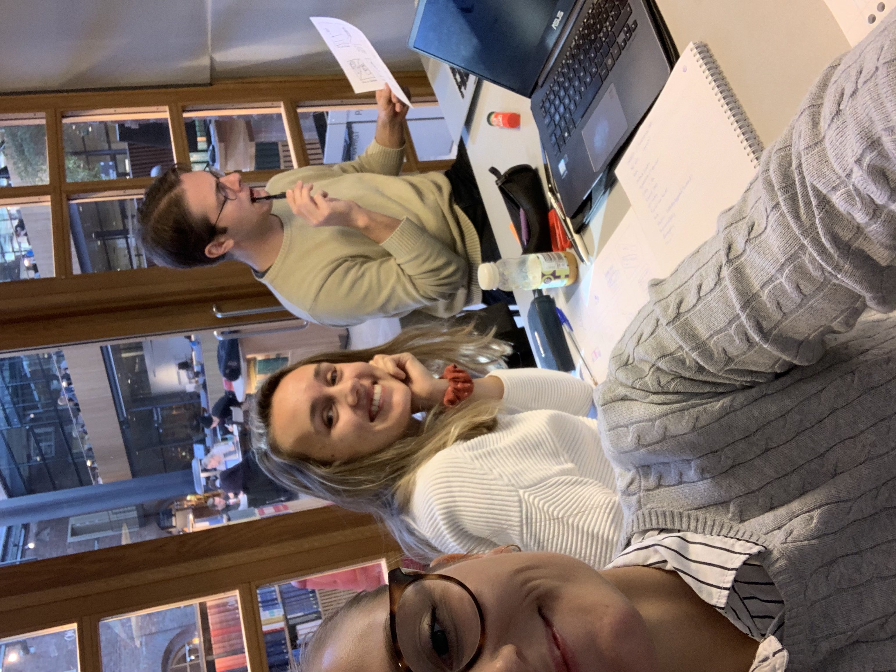
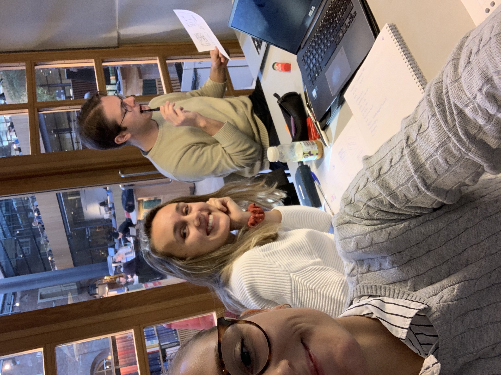

We have developed a prototype which enables Stockholm Royal Seaports' citizens to visualize planned construction and keep a dialogue with Stockholms Stad.

The Work Process
In this project, we tried to give answer to the question:“How should a visualization tool be designed to support and facilitate the City of Stockholm’s work in communication and gathering of opinions on planned new constructions?” The project was given to us by the City of Stockholm and our project group of five students from the Royal Institute of Technology have worked on it during the course of 16 weeks.
Below follows an overview of the work process, a detailed report of the project can be found under the report tab in the upper menu.
-
Pre-Study
-
Survey + Interviews
-
Design Workshop
-
Medium-fidelity
-
Focus Group
-
Final Prototype
Pre-Study
To better understand the current dialogue process and how we might help improve it, we conducted a pre-study. This study included literature research, stakeholder analysis and qualitative interviews. Our key takeaways included the decision that the final delivery should be an smartphone app prototype using 360 technology, a technique that is fairly easy to develop and is already used by the City of Stockholm and the Urban Planning Office.
Survey + Interviews
Together with the City of Stockholm, we developed a survey that was sent out to residents in Stockholm Royal Seaport (SRS). The purpose of the survey was to gain insight into residents' level of engagement, communication habits and wishes in regards to urban planning in SRS. Our findings were used to inform the prototyping to better meet the needs of the end-users – namely, the residents.

Throughout the design process, we frequently met with representatives from the City of Stockholm to ensure that visions and goals of the project group were aligned with those of the project owner.
The topics covered included:
- Design of initial questionnaire.
- Discussion of visualization tools.
- Discussion on shifting focus from AR to 360-view. Planning for posting a survey in Stockholm Royal Seaport Facebook group.
- Demonstration of prototype, questions regarding funding and the future of the prototype.
Design Workshop
We held a Pen and Paper workshop with all five members of the project team to provide initial user feedback in a creative and fast manner. Prior to the workshop, the results from the resident survey was walked through to make sure that the residents’ requirements and needs would be seen to early in the development of the prototype. The workshop was divided into two parts; an initial brainstorming session where ideas of functionality and requirements were written on a whiteboard. Next, a drawing session was conducted, where we created initial designs and flow drawings on paper. These drawings were then presented to, and tested by the rest of the team.


 

Medium-fidelity
Based on the low fidelity sketches from the Pen and Paper workshop, we gathered the different ideas and designs that we collectively found most appealing and used them to produce a cleaner medium fidelity version of the prototype. This was then used as a starting point when moving on to a high fidelity version of the prototype.
Focus Group
The purpose of conducting a focus group was twofold. One section of the focus group session consisted of an open discussion with residents about their engagement in the planning and consultation processes of new construction. Our aim was that this would give a better understanding of what drives some residents to engage in questions related to new constructions, and what keeps others from engaging. The other section consisted of letting the participants try an early version of the prototype to gather their responses and feedback. Our findings provided further guidance for finalizing the prototype.
Final Prototype
We created an initial set of pages using the designs from the medium fidelity prototype which we then made interactive with the use of InVision. Colors and fonts used were made sure to match the City of Stockholms digital graphical profile to provide the most realistic possible deliverable. However, after the completion of the focus group, it was mutually decided upon that the tool used to create the digital prototype was of deficient standard. The development switched to using Adobe XD instead of InVision, as the presentation and interaction phase was deemed to be more stable and professional. 360 - functionality is coded in JavaScript.
Final prototype
Press the toggle button below to simulate a horizontal 360-visualization